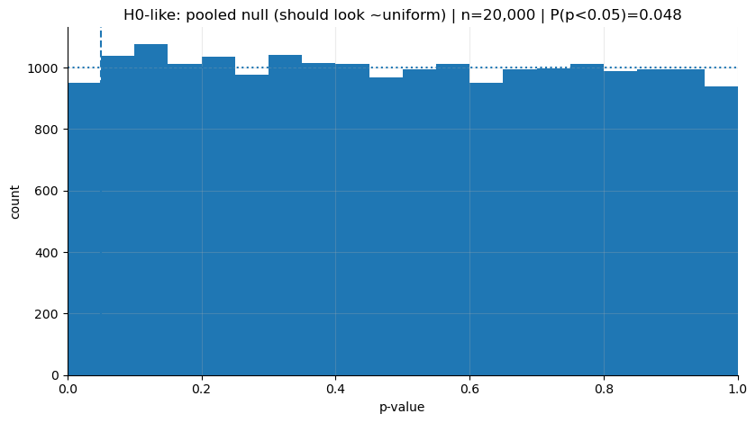
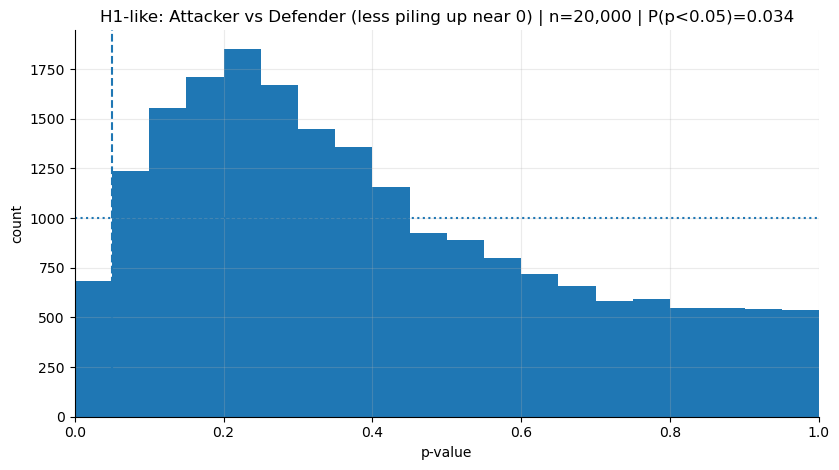

comps = sb.competitions()
competition_id = 2
season_id = 27
matches = sb.matches(competition_id=competition_id, season_id=season_id)
match_ids = matches["match_id"].tolist()Introduction
I’ve been kind of obsessed with decision-making for a while. I think human intuition, by its nature, is weak when it comes to making decisions in high-dimensional problems. Even if we can make “primitive” decisions very comfortably, in complex problems our intuitive decision-making isn’t that different from random choices. The environment matters a lot here, too. If we work in an area where our actions produce highly regular and fast feedback, then we can trust our intuition more.
There’s no complete cure for biases and mental shortcuts; we’re all vulnerable to them. But by building certain habits, we can still pave the way to making better decisions overall. Most of the times I felt like I got better at decision-making were the times I acted by not trusting my intuition on many things. While picking up new habits, I tried to lean on statistical ways of thinking. I’m also aware I still have a long way to go.
And like everyone else, as I walk this road, I understand what I’m working on more easily through examples from daily life. That’s why, in what I write, I often try to use context discovery and analogy. It’s useful to map the decisions I make in different areas of my life onto what I’ve learned. And for the next decision, I try to make each new way of thinking more “native” to me. Being able to develop skills that transfer across contexts matters.
The observation bank I’ve built from working in data analytics for about 5 years pushed me to question some of the intuitive choices that are used a lot in the field. The topic I sat down to write about in this blog is one of those widely used “rules of thumb”: the “p-value”.
The most basic problem with the p-value is this: most of the time we use it as “a one-shot decision label”. But even though the p-value lands in our hands as a single number, it carries variability behind it; even under the same true effect, if you measure again and again with different samples, sometimes p comes out small, sometimes large. In the previous post, when I said “extremes mislead”, what I meant was treating a single observation as the whole universe. Here we’ll carry the same idea to a different place: a single p doesn’t have to represent reality. Sometimes, just with bad luck, it looks “insignificant”; sometimes, with good luck, it looks “very significant”. So the p-value kind of dances. And from what I can see, this concept—now a very common one in data analytics—often gets used as a one-shot decision label by ignoring its dance.
In this post, to make things more intuitive and easier to understand, I’ll let the reader watch two separate “universes”; think of it as if the same movie has two different versions.
In the first universe, there is the H0 world: in reality there is no difference between two things, meaning there is no signal to catch.
In the second universe, there is the H1 world: in reality there is a difference, but because of signal strength and the level of noise, it doesn’t show up with the same clarity in every measurement.
The same p-value idea behaves very differently in these two worlds: in one, false alarms are “natural”; in the other, even though there is a real signal, it’s “normal” that sometimes the alarm doesn’t ring. When I put these two universes side by side, I started reading the p-value not as a result stamp, but as a frequency idea that helps us tune our intuitive decisions.
NoteNotes on the method and which data we’ll use
At this point I don’t want to leave the abstract concepts hanging in the air; because my whole point is already this “intuitive decision” thing. In real life, when we make decisions, most of the time we don’t have a single experiment in our hands—there are lots of small observations, an uncertain signal, and noisy results. Football is a perfect lab in this sense: first, everyone has an opinion :), the data is abundant, but decisions (player form, transfers, coaching changes) are often made by leaning on single matches or short runs. So football data is a good ground for showing how “single numbers” like the p-value can mislead us.
While showing this, I wanted to use real football data. StatsBomb’s Open Data set openly shares event-level data for some leagues and tournaments. This whole blog will be a sanity-check of an idea that can be reproduced easily, and I’ll use the Premier League 2015–16 season. The story of that season is extremely strong (Leicester’s title), and because I followed it live back then, the context is still vivid in my head. Instead of abstract A/B examples, I think it’s easier to place what we’re trying to measure into a world everyone can picture.
Technically, in Python we connect to Open Data with statsbombpy and pull the season’s matches; then we take the shots from each match’s event data and use the expected goals value per shot (shot_statsbomb_xg). As you know, this metric is both a common reference point in modern football and, because it’s closer to a process measure than the outcome (goal/no goal), it reduces noise. In the simulations you’ll see later, we’ll use this shot-xG distribution and pretend we’re asking the same question again and again: “Is the average shot quality of these two groups really different?” That’s where the p-value’s dance becomes much more visible on this noisy sample coming from real football.
The experiment we’ll run: asking the same question thousands of times
Of course we’re not going to leave the “p-value dances” line as an abstract claim. We’ll pretend we’re repeating the same comparison thousands of times and actually look at the shape of the p-values.
For that, I’m choosing two groups where it’s reasonable to expect a difference:
- Attacker: positions like striker, winger—roles that do more finishing
- Defender: center back/full back—more defense-oriented positions
The reason I’m picking this pair is simple: xG per shot (shot quality) is strongly related to role and position. You’d expect attackers to take shots more often from regions considered more “dangerous”; defenders’ shots can be rarer and lower-quality. Kompany might have felt amazing when he took that shot and struck it cleanly, but the chance of it becoming a goal was still low.. :) Overall, this grouping gives us a reasonable “true difference” hypothesis for our H1 world.
We’ll construct the H0 world like this: as if there is no difference in reality, we’ll generate the two groups from the same pool. To do that, we collect all players’ shots into a single pool, then split them into two groups via random selection. That way, both groups’ average shot quality truly comes from the same distribution.
Pulling the data and preprocessing
The cells below select the Premier League 2015–16 season from StatsBomb Open Data and pull the event data for all matches, then keep only the shots and collect the shot_statsbomb_xg field.
Next up: take the shots from all matches and split them into two groups. My goal here isn’t to create a “perfect position classification”; it’s to create two reasonable categories that match our intuition.
NoteCode: Pulling event data and preprocessing
KEEP_COLS = [
"match_id",
"type",
"position",
"shot_statsbomb_xg",
"team",
"player_id",
"under_pressure",
]
shots_list = []
for mid in match_ids:
df = sb.events(match_id=mid)
df = df[df["type"] == "Shot"]
cols = [c for c in KEEP_COLS if c in df.columns]
df = df[cols]
df = df.dropna(subset=["shot_statsbomb_xg", "position"])
shots_list.append(df)
shots = pd.concat(shots_list, ignore_index=True)
for c in ["position", "team"]:
if c in shots.columns:
shots[c] = shots[c].astype("category")
shots["shot_statsbomb_xg"] = shots["shot_statsbomb_xg"].astype("float32")
shots["pos_group"] = np.where(
shots["position"].str.contains("Forward|Striker|Winger", case=False, na=False),
"Attacker",
np.where(shots["position"].str.contains("Back|Defender", case=False, na=False), "Defender", "Other")
)
shots = shots[shots["pos_group"].isin(["Attacker", "Defender"])]As you can see below, there are enough shots in the season data.
len(shots)4286Simulating the “true difference” and “zero difference” worlds
The key idea here is this: a p-value isn’t a one-off result; because what it tells us is how likely the mean from our sample is, under the assumption that the null hypothesis is true. Our sample could have been totally different, because we made a random selection. So p-values necessarily have a distribution, and that distribution changes with sample size. We’ll “animate” this distribution by repeating the same experiment 20,000 times with the help of the law of large numbers.
- H1-like simulation (there is a real difference): we sample separately from the Attacker and Defender groups; on each repetition we compare the two means and compute p.
- H0-like simulation (there is no real difference): we assume both groups come from the same pool and draw two samples from a single pool; again we compute p.
# H1: two groups come from different pools.
def simulate_pvals(df, group_col, value_col, g1, g2, n=100, B=20000, seed=0):
rng = np.random.default_rng(seed)
x = df[df[group_col] == g1][value_col].to_numpy()
y = df[df[group_col] == g2][value_col].to_numpy()
p = np.empty(B)
for i in range(B):
xs = rng.choice(x, size=n, replace=True)
ys = rng.choice(y, size=n, replace=True)
p[i] = stats.ttest_ind(xs, ys, equal_var=False).pvalue
return p
# H0: two groups come from the same pool.
def simulate_pvals_null_by_permutation(df, group_col, value_col, g1, g2, n=100, B=20000, seed=1):
rng = np.random.default_rng(seed)
sub = df[df[group_col].isin([g1, g2])][[group_col, value_col]].dropna().copy()
vals = sub[value_col].to_numpy()
p = np.empty(B)
for i in range(B):
xs = rng.choice(vals, size=n, replace=True)
ys = rng.choice(vals, size=n, replace=True)
p[i] = stats.ttest_ind(xs, ys, equal_var=False).pvalue
return pWhen I pick a value like n=50 here, what I’m really doing is this: “In each universe, it’s as if I take two mini-samples of 50 shots (Attacker vs Defender) and check whether there’s a difference between them.” This maps almost perfectly to the “judging from a single match” feeling in football: small sample size.
Why do p-values look like a “flat line” in the H0 world?
In the H0 world, there is no real difference. So producing p-values is basically like producing numbers spread uniformly between 0 and 1. 0.08 and 0.98 are equally ordinary.
Let’s see this not just as words, but directly through outputs taken from the data.
NoteCode: Histogram function
def plot_hist(p, title="", bins=20, alpha=0.05, density=False, show_expected=True):
p = np.asarray(p, dtype=float)
p = p[np.isfinite(p)]
p = p[(p >= 0) & (p <= 1)]
frac_sig = (p < alpha).mean()
fig, ax = plt.subplots(figsize=(8.5, 4.8))
edges = np.linspace(0, 1, bins + 1)
ax.hist(p, bins=edges, density=density)
ax.axvline(alpha, linestyle="--")
if show_expected:
if density:
ax.axhline(1.0, linestyle=":")
else:
expected = p.size / bins
ax.axhline(expected, linestyle=":")
main_title = title.strip() if title else "p-value distribution"
ax.set_title(f"{main_title} | n={p.size:,} | P(p<{alpha})={frac_sig:.3f}")
ax.set_xlabel("p-value")
ax.set_ylabel("density" if density else "count")
ax.set_xlim(0, 1)
ax.grid(True, which="major", axis="both", alpha=0.25)
for spine in ["top", "right"]:
ax.spines[spine].set_visible(False)
plt.tight_layout()
plt.show()The chart below shows the p-value distribution from a simulation run 20,000 times in the H0 world. As you can see, the p-values are distributed almost evenly between 0 and 1.
p_h0 = simulate_pvals_null_by_permutation(
shots, "pos_group", "shot_statsbomb_xg", "Attacker", "Defender", n=50, B=20000, seed=1903 # bjk
)
print("H0-like P(p<0.05):", (p_h0 < 0.05).mean())
plot_hist(p_h0, "H0-like: pooled null (should look ~uniform)")H0-like P(p<0.05): 0.04755
In the H0 world, a small p isn’t “bad”; it’s just the inevitable cost of false alarms. If you picked the threshold as 0.05, then even when there is no real difference, in the long run you’ve already accepted that you’ll see p<0.05 in about 5 out of every 100 trials. So even if the null hypothesis is true and there’s no effect, in 5 out of 100 experiments we’ll mistakenly conclude “there is a significant difference”—and we set that threshold ourselves.
The H1 world: if there is a true difference, p’s pile up on the left, but can still come out large
In this universe, because we treat Attacker and Defender as genuinely separate pools, if our a priori hunch is right, the means will tend to separate, and the p-values will start piling up toward 0.
But the everyday intuition of “if p<0.05 then there is an effect” is wrong, and unless we keep the p-value distribution in our head, we might not realize it. Intuitively, the first thing that comes to mind is that the number we see is definitive proof that the effect exists. In real life, though—especially with small samples—sometimes p can come out large, too. Think of flipping a coin. Even if the coin is slightly rigged, in 10 flips it can sometimes look perfectly fair.
The football version is very familiar. Even if a striker is truly a good finisher, in a single match he can miss two clear chances. Or, since referees are a frequent topic: even if they were practically making meaningfully biased decisions, looking at just 1–2 matches we still might not be able to call it—we could also see it as if they’re officiating very fairly.
p_h1 = simulate_pvals(
shots, "pos_group", "shot_statsbomb_xg", "Attacker", "Defender", n=50, B=20000, seed=1903 # bjk
)
print("H1-like P(p<0.05):", (p_h1 < 0.05).mean())
plot_hist(p_h1, "H1-like: Attacker vs Defender (should pile up near 0)")H1-like P(p<0.05): 0.5935
The first thing that jumps out in the chart is, naturally, the left skew. But we can still see bars on the right side.
That’s why we need to start perceiving p not as a single outcome, but as something with a shape—a distribution. Having p’s that fall on the right tells us this:
Even when there is an effect, “non-significant” results are sometimes expected; what decides this is the power of the sample and the level of noise.
Now let’s make power something we can talk about on top of these histograms: “P(p<0.05)” is basically the quantified version of how often we expect the alarm to ring in each universe.
Power: the “left of the alpha line” in the histogram
When plotting the histograms, I deliberately added the dashed vertical line at 0.05 (alpha). Because that line is the boundary where we say: “if it falls below this threshold, I’ll raise the alarm”.
In fact, what we call power is the area that stays to the left of this line in the H1 world:
Power = P(p < α | H1 true)
Let’s not treat this as some complicated thing; it’s just saying this:
If there is a real difference, and I repeated the same experiment over and over, in how many of them would I see “p<0.05” and say “ok, there’s a signal”?
The P(p<0.05)=... text in the chart title is exactly “the share left of the alpha line”.
- In the H0 chart (the uniform one), this comes out around 0.05: because when there is no signal, the threshold itself determines the false-alarm rate.
- In the H1 chart (the left-piled one), this number becomes power: how often the alarm rings when there is a real difference.
If power is 50%, then if we ran the same comparison 100,000 times, we’d see p<0.05 in about 50,000 of them. The kind of sentence we mentioned at the beginning—“p didn’t come out today → there is no effect”—often skips this: maybe the power of this experiment is low, meaning you should expect to see a “silent alarm” frequently even when there is an effect.
When we say n=50, we’re basically taking a “mini-sample of 50 shots from each group”. In some matches/series you can’t even collect 50 shots; as the sample gets smaller, noise grows and power drops. Result: even if there is a real difference, p can sometimes stay on the right side.
In the next step, we’ll show the intuition from the other direction: “if you increase n, power increases” is true, but one of the best ways to feel it is to shrink n and see what you lose.
In the previous chart, with n=50 (mini-samples of 50 shots per group), we saw that p’s pile up clearly on the left. Now let’s do the same thing with a smaller sample size: n=5. Each time, we’ll take 5 shots from attackers and 5 shots from defenders and test. Especially for attackers, this can be even harsher than “judging from one match”. A striker can easily take more than 5 shots in a match. It’s like passing judgment before the match even ends.
In the chart below, in the H1 world, we’ll see:
The part left of the alpha line (0.05) will shrink — meaning the
P(p<0.05)in the title will drop.The “stuck to the left” feeling will weaken; p’s will spread more to the right.
p_h1 = simulate_pvals(
shots, "pos_group", "shot_statsbomb_xg", "Attacker", "Defender", n=5, B=20000, seed=1903 # bjk
)
# leave H0 the same way: so our reference line (uniformity) doesn't change
p_h0 = simulate_pvals_null_by_permutation(
shots, "pos_group", "shot_statsbomb_xg", "Attacker", "Defender", n=50, B=20000, seed=1903 # bjk
)
print("H1-like P(p<0.05):", (p_h1 < 0.05).mean())
print("H0-like P(p<0.05):", (p_h0 < 0.05).mean())
plot_hist(p_h0, "H0-like: pooled null (should look ~uniform)")
plot_hist(p_h1, "H1-like: Attacker vs Defender (less piling up near 0)")H1-like P(p<0.05): 0.03405
H0-like P(p<0.05): 0.04755

I think the message here is very clear: even when there is a real difference, if all you have each time is 5 shots per group, expecting a “significant result” is not realistic.
The decisions we make with low sample sizes often come not from “there is no reality there”, but from not being able to see it. You can also see from here how harmful it can be that we’re so ready—fan or board member, doesn’t matter—to make big statements about player form, team chemistry, or a coach’s impact based on a single match.
Where do we make the wrong decisions?
Put simply: we treat a single sample as if it were the distribution.
Maybe p-value isn’t a concept we use in daily life a lot, but every time we “detect” a difference or an effect in our head, we’re basically running a p-value-like process. We think what we saw is different from normal, and we kick off a test in our mind according to our norms. If the difference looks big to us, and it sits farther from the general deviation of the norms around us, we call it “significant”. But usually this comes from a single or just a handful of observations.
When I started seeing the p-value not as a “single outcome” but as “the output of a repeatable process”, I began thinking that most of the time we’re just overreacting to noise randomly showing up in front of us. Yet we use it as the basis for character analysis, form diagnosis, even million-euro decisions.
I think there are common pattern mistakes we fall into, for example:
- We do character analysis off a single big match
He managed the derby badly, we lost. → “He’s not a big-match coach.”This is a problematic read because “derby performance” contains a ton of randomness inside it. An early conceded goal, a referee decision, one or two critical turnovers… Instead of measuring someone’s true level, we take a single draw from the distribution (that day’s realization) and do a personality analysis.
- We get overly attached to the score or results
He scored 2 goals → “in form.”Goals are one of the noisiest outputs in football. But most of the time we worship the outcome and ignore the process: where the shot came from, shot quality (xG), the player’s role, the context in which the team gets him into that position… We used xG (shot_statsbomb_xg) for exactly this reason: it’s a good example of a process metric that’s closer to the shot’s “danger” level, independent of whether it turned into a goal.
- We make expensive decisions off a short run
10–15 matches → “sell / loan / sack the coach.”This means making expensive decisions, in the context we described above, with a “low-power measurement”. In the Süper Lig, sometimes you see a coaching change every 10 matches. A 10-match run is a tiny window inside football’s noise. What we see here is often not true performance, but deviations coming from randomness.
For example, BozzStats has a visualization that always makes me laugh.
How does this help us make better decisions?
Like I mentioned before, trying to develop skills that transfer across contexts is really important. We can use this idea while building small reflexes to make better decisions.
- Quit the habit of deciding with a tiny sample (1–5 decision points)
Instead of passing judgment from a single match, build the habit of slowing yourself down with: “In what kind of series am I seeing this performance?” Questions to think with:
- Is the same player making similar decisions in similar roles, against similar opponents?
- Did the conditions change? (role, injury, tactics, match flow)
In p-value language, this means: don’t decide with a single p; look for repeatability in the process.
- Raise the evidence threshold for expensive decisions
As the cost of a decision goes up, you should raise your “evidence” threshold too.
- Decisions like sacking a coach / selling a player / giving a big contract shouldn’t be made off a one-match feeling, but with a stronger signal and a more solid sample.
You can do this by keeping the n=5 experiment in the notebook in mind. When the sample shrinks, power drops, and it becomes harder to see a clear result “even when there is an effect”. For expensive decisions, that’s not a risk we want to take.
- Try to use process metrics instead of outcome metrics
Instead of making decisions with outcome metrics like goals/points, process metrics (xG, shot quality, passing connections, pressing actions, carrying the ball into the final third, etc.) can give more stable signals.
In general, focusing on improving the process and waiting for the results to follow can be healthier than getting overly attached to single outcomes.